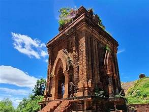
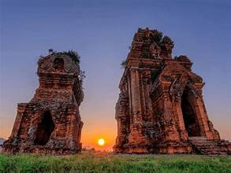
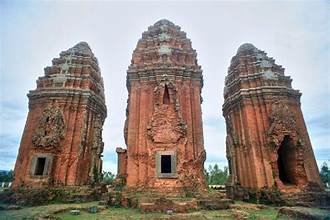
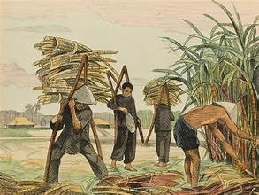
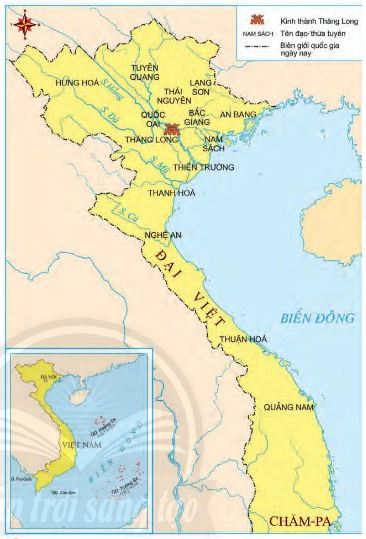
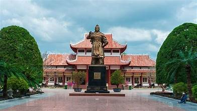
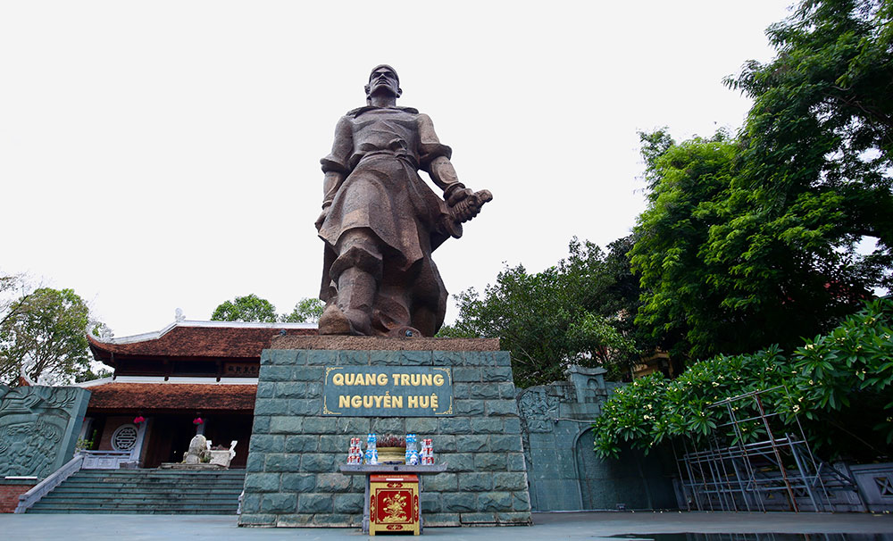
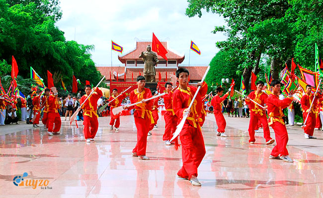
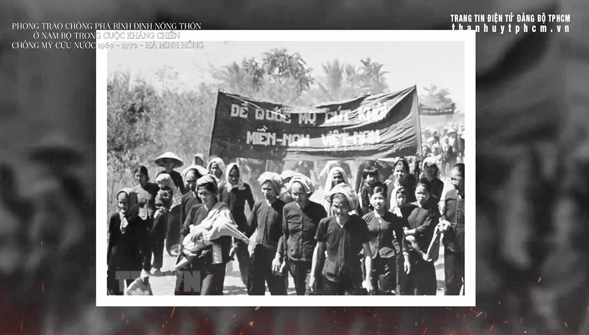
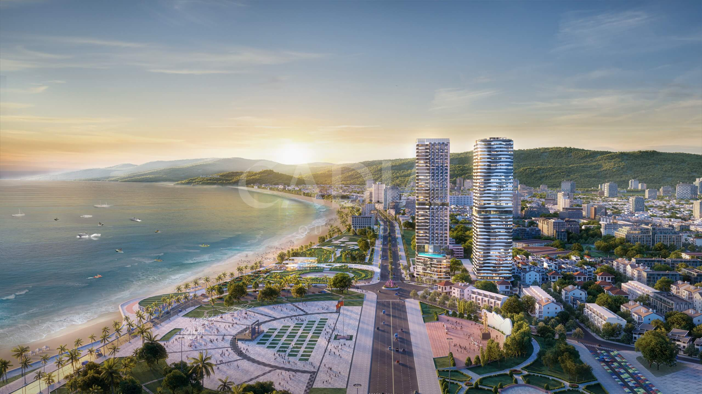

🕰️ Bình Định là vùng đất có bề dày lịch sử lâu đời, gắn liền với quá trình hình thành và phát triển của dân tộc Việt Nam. Trải qua nhiều thời kỳ lịch sử khác nhau, nơi đây đã in đậm dấu ấn của các nền văn hóa cổ, những cuộc đấu tranh anh dũng và sự vươn mình mạnh mẽ trong thời kỳ hiện đại.
Từ hàng nghìn năm trước, vùng đất Bình Định ngày nay từng là trung tâm quan trọng của vương quốc Chăm Pa cổ, đặc biệt là khu vực Đồ Bàn (Vijaya) – kinh đô của người Chăm trong nhiều thế kỷ. Những công trình kiến trúc như tháp Bánh Ít, tháp Đôi, tháp Dương Long còn tồn tại đến ngày nay là minh chứng rõ nét cho một nền văn hóa rực rỡ, giàu bản sắc và trình độ kiến trúc, điêu khắc tinh xảo.
  Từ thế kỷ XV, sau khi nhà Lê mở rộng lãnh thổ về phương Nam, Bình Định chính thức trở thành một phần của Đại Việt. Người Việt đến đây khai hoang, lập làng, phát triển nông nghiệp và giao thoa văn hóa với cư dân bản địa. Vùng đất này dần trở thành một trung tâm kinh tế – quân sự quan trọng của khu vực Nam Trung Bộ.
 Cuối thế kỷ XVIII, Bình Định trở thành cái nôi của phong trào Tây Sơn, gắn liền với tên tuổi Hoàng đế Quang Trung – Nguyễn Huệ. Từ mảnh đất Tây Sơn thượng đạo, phong trào khởi nghĩa đã lật đổ các tập đoàn phong kiến mục nát, thống nhất đất nước và làm nên chiến thắng Ngọc Hồi – Đống Đa lừng lẫy trong lịch sử dân tộc. 🔥 Thời kỳ này đã hun đúc cho Bình Định truyền thống yêu nước, thượng võ và tinh thần quật cường, trở thành niềm tự hào lớn của người dân nơi đây.
  Trong hai cuộc kháng chiến chống thực dân Pháp và đế quốc Mỹ, Bình Định là địa bàn chiến lược quan trọng, nơi diễn ra nhiều trận đánh ác liệt. Nhân dân Bình Định đã kiên cường đứng lên bảo vệ quê hương, góp phần quan trọng vào sự nghiệp giải phóng dân tộc và thống nhất đất nước.
Sau năm 1975, đặc biệt là trong thời kỳ đổi mới, Bình Định không ngừng vươn lên mạnh mẽ. Thành phố Quy Nhơn trở thành trung tâm phát triển kinh tế, khoa học và du lịch của khu vực. Các lĩnh vực như công nghiệp, du lịch biển, giáo dục và khoa học công nghệ ngày càng khẳng định vị thế của tỉnh trên bản đồ cả nước. 🌱 Bình Định hôm nay là sự kết hợp hài hòa giữa truyền thống lịch sử hào hùng và khát vọng phát triển hiện đại, hướng tới tương lai bền vững.
